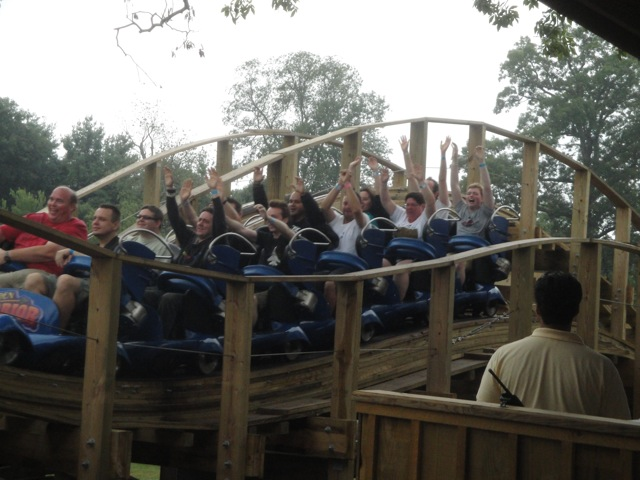

| |
Wooden Warrior Review

Today, we'll be heading over to Quassy where we'll be reviewing Wooden Warrior. The park's wooden coaster and without a doubt, their star attraction. I mean this is the roller coaster that put Quassy on the map and bumped them up from being a credit whoring stop to a small little park. We hop in the Timberliners (very nice BTW), and away we go!! We head down a small dip and up the lifthill. Now going up the lifthill, you may be wondering to yourself "Why the hell is this so highly rated? It looks like just another kiddy coaster." You'd be wrong. This is totally a good quality coaster. But before you can rebuttal my statement, we're already at the top, around the turn, and heading down the first drop. Yes, it may be of cliff jumping size, but it's a nice fun little drop. We immidetly shred through a small little hump. There's not much airtime here. So far, it just seems like a tiny little wooden coaster not that good. But then we go through a small little turn and up into a small little hill. And sure enough, airtime!!! Some really good airtime!!! Holy Crap!!! It's amazing that this kind of airtime is on a ride of this size. Just...whoah. You thought this was just gonna be a credit whoring kiddy woody, but ended up with a really kick-ass ride!!!! We head up into another small hill, get some airtime, and head straight into a tunnel. TAKE THE TUNNEL!!! In the tunnel, we head into a swooping turn, all while in the tunnel. The turn is FORCEFUL, providing us with some nice laterals. And did I mention that the tunnel smells like a Christmas tree, so it's really pleasent to go through. We pop out of the tunnel and out of our seats as we drop back down to the ground. Hey, it's not a far drop, but it does the job. We rise up into another small airtime hill, except instead of going up and then back down, we go up, and then go through a couple of really tiny little bunny hops. Always a fun element to any roller coaster. We head through a small turn, down a small drop, and over another bunny hop. Sadly, it's not as strong as it was before, as sadly the ride is starting to wind on down. But it's still really fun. We go through one last turn for some nice laterals, and that's it. We're in the brake run. Do NOT underestimate this ride due to it's size. It CRAPS all over the kiddy woodies (and even those are fun). The only problem I have with the ride is that while it's really good, it's also pretty short. It's almost like this was meant to be the 2nd half of a much bigger coaster, where it's big and strong, go through the mid course brakes, go through Wooden Warrior, still going strong, brake run. Now that would probably be a Top 10 Coaster. But as is, Wooden Warrior is still a really good wooden coaster. It may look like a family coaster, but it's stronger than a good chunk of the full sized wooden coasters in the world. Definetly give it a ride while you're at Quassy.
8/10
Location: Quassy
Opened: 2011
Built by: Gravity Group
Last Ridden: July 29, 2011
Wooden Warrior Photos




Home
|